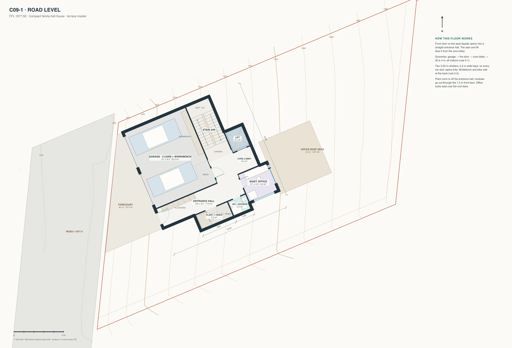
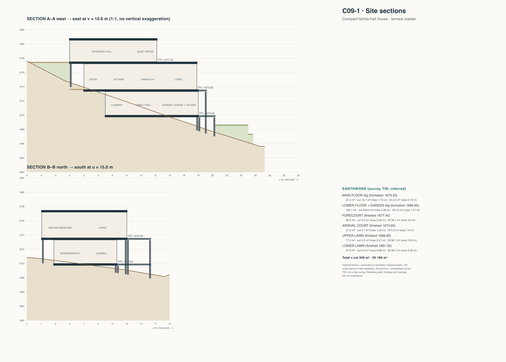
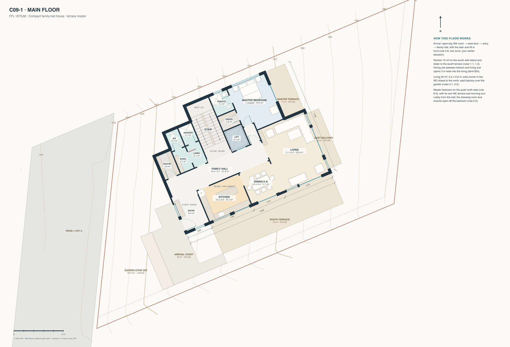
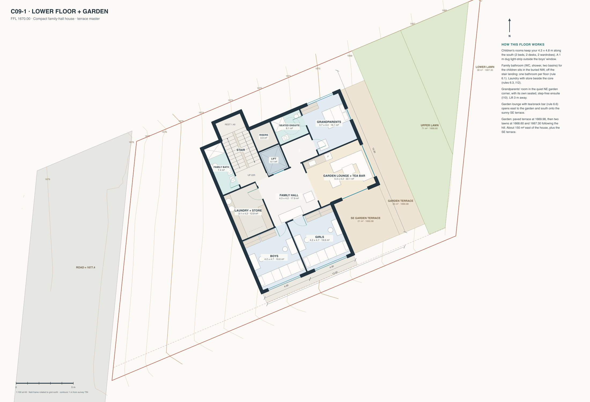
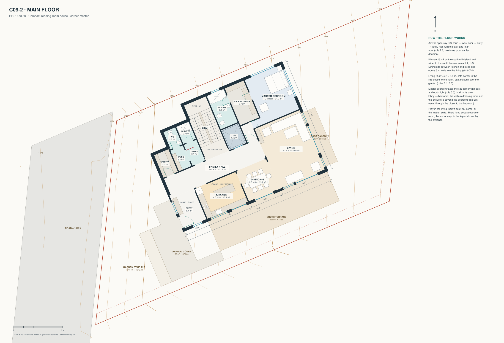
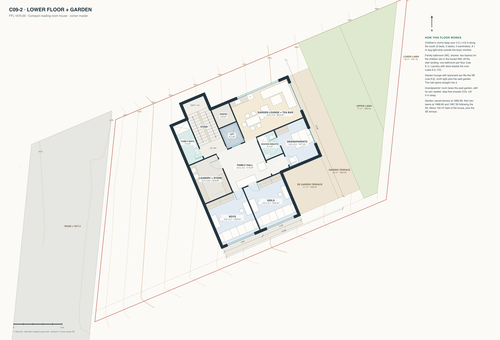

My House · C09 compact options
Claude Code · 27 Oct 2026 · C08 shrunk to fit the field and free the east garden (stmt-023, stmt-024)
Compare the options
The table shows only what differs. Below it, the same floor of each option sits side by side; rooms that differ are outlined in orange dashes.
| C09-1 Compact family-hall house · terrace master | C09-2 Compact reading-room house · corner master | |
|---|---|---|
| Master bedroom | N · 19 m² | NE · 21 m² |
| Master suite extras | Ensuite 4 m², Dress 3 m², Master Terrace 11 m² | Ensuite 7 m², Walk-In Dress 9 m² |
| Lower floor NE corner | Grandparents | Garden Lounge + Tea Bar |
| Lower floor east middle | Garden Lounge + Tea Bar | Grandparents |
| Grandparents' room | 16 m² · NE | 14 m² · E |
| Grandparents' seated ensuite | 6 m² · N | 5 m² · centre |
| Garden lounge | 22 m² · E | 28 m² · N |
| Main floor: terraces | South Terrace 45, East Balcony 8, Master Terrace 11 m² | South Terrace 45, East Balcony 8 m² |
| Total floor area | 452 m² | 463 m² |
| Ground covered | 237 m² (39% of field) | 240 m² (40% of field) |
Identical in every option (14 items)
| C09-1 Compact family-hall house · terrace master | C09-2 Compact reading-room house · corner master | |
|---|---|---|
| Main floor: south side, west → east | Kitchen → Dining 6–8 → Living | Kitchen → Dining 6–8 → Living |
| Living | 34 m² · SE | 34 m² · SE |
| Kitchen | 15 m² · S | 15 m² · S |
| Dining | 11 m² · S | 11 m² · S |
| Dining ↔ living | open, one L-shaped room | open, one L-shaped room |
| Lower floor SE corner | Se Garden Terrace (outdoor) | Se Garden Terrace (outdoor) |
| Lower family hall | 18 m² · centre | 18 m² · centre |
| Study / play | none | none |
| Road level: terraces | Office Roof Deck 32 m² | Office Roof Deck 32 m² |
| Lower floor + garden: terraces | Se Garden Terrace 21, Garden Terrace 33 m² | Se Garden Terrace 21, Garden Terrace 33 m² |
| Main / lower floor ends at | u 17.8 / u 18.0 m | u 17.8 / u 18.0 m |
| East garden (inside setbacks) | 151 m² | 151 m² |
| Earthwork (inferred) | cut 259 m³ · fill 180 m³ | cut 259 m³ · fill 180 m³ |
| Your open decisions | 2 | 2 |





The field
- Ground falls 11.4 m from the road side (west, 1677.0) to the east boundary (1665.7), about 38%.
- It also falls north → south: 3.8 m along the west side and about 1.5–3 m across the middle, roughly 10–25%.
- So the house steps down to the east. Its buried NW corner holds the stores, wet rooms and core; day rooms and bedrooms take the open south and east.
- All levels come from the stored survey TIN. The site is still SITE_NEEDS_VERIFICATION, with UTM zone, datum and legal boundary unconfirmed.
What changed from C08
| C08 | C09 |
|---|---|
| Too big: 525–553 m² gross, the house covering 48–51% of the field. | 452–463 m² gross, covering 39–40% (stmt-023). |
| Lower floor ran to u 21.6–22.2. East lawn only 35–43 m². | Lower floor ends at u 18.0. 151 m² of east garden inside the setbacks: a paved terrace, then two lawns stepping down the hill. Plus a 21 m² SE terrace (stmt-024). |
| SE garden terrace and path crossed the parcel line (my checker missed it). | Every terrace and path is checked against the 1 m setbacks. |
| Living 43–46 m², separate dining 14 m². | Living 34 m² (5.2 × 6.8 m, sofa corner closed to the north). The dining opens 3 m wide into it, making one L-shaped day room (stmt-024). |
| Stair 3.2 m wide. | Same dog-leg with REST 1.40, flights 1.15 m: stair box 2.6 m wide. |
| Lower floor had a family hall of 30–34 m² plus a lounge, and a WC/shower cluster. | Square 18 m² family hall, a 22 m² garden lounge with tea bar (kept, as you chose), and one family bathroom. |
| Deepest cut 4.2 m. | Deepest cut 4.4 m, still within your 4.5 m (survey TIN, inferred). |
Why two options, not three. With the house ending at u 18, the core, the master suite on the north (6.5), a ≥5 m wide living room in the SE (3.3), the kitchen on the south terrace (1.1) and dining opening into the living (stmt-024) allow one day-floor layout. C08-3's dining-kitchen-living order no longer works once the dining joins the living. What can still vary is the master suite (mid-north with a private NE terrace, or the NE corner) and the lower floor (grandparents NE with the lounge east, or the reverse). A third set would only shuffle these. Say if you want one anyway.
The options at a glance
| C09-1 | C09-2 | |
|---|---|---|
| Derived from | C08-1 (owner's B) shrunk to the field | C08-2 (owner's A) shrunk to the field |
| Idea | C08-1's plan pulled in to u 18. Kitchen, dining and living run along the south, with the dining open into a 35 m² living room. The master bedroom is mid-north with its own NE terrace. Downstairs, the grandparents' suite is NE and the garden lounge east. | The same compact day floor. The master bedroom takes the NE corner, and a quiet prayer/reading room (from your A and B) sits beside it. Downstairs the garden lounge takes the NE and the grandparents' room faces the east garden. |
| Living | 33.9 m² | 33.9 m² |
| Kitchen / dining | 15.1 m² / 11.1 m² | 15.1 m² / 11.1 m² |
| Master bedroom | 19.4 m² | 21.0 m² |
| Main / lower east edge | u 17.8 / u 18.0 | u 17.8 / u 18.0 |
| Gross floor (road+main+lower) | 452 m² | 463 m² |
| Earthwork (TIN, inferred) | cut ≈ 259 m³ · fill ≈ 180 m³ | cut ≈ 259 m³ · fill ≈ 180 m³ |
| Checked rules failing | 0 | 0 |
| Open owner decisions | 2 | 2 |
| Ground covered by house | 237 m² of 600 | 240 m² of 600 |
C09-1 · Compact family-hall house · terrace master
C08-1's plan pulled in to u 18. Kitchen, dining and living run along the south, with the dining open into a 35 m² living room. The master bedroom is mid-north with its own NE terrace. Downstairs, the grandparents' suite is NE and the garden lounge east.
Road Level
Main Floor

Lower Floor + Garden

Sections and earthwork
Rule checklist (OWNER_DESIGN_RULES.md, rule 8.1)
| Rule | Status | Evidence |
|---|---|---|
| 2.3.voids.road | PASS · checked | enclosed leftover holes in plate: 0 |
| 2.3.voids.main | PASS · checked | enclosed leftover holes in plate: 0 |
| 2.3.voids.lower | PASS · checked | enclosed leftover holes in plate: 0 |
| 1.1 kitchen→south terrace | PASS · checked | kitchen south wall is façade=True; door(s) [1.6] m onto ['SOUTH TERRACE'] |
| 1.2 kitchen prime frontage | PASS · checked | kitchen spans u 4.6–9.2 on the south façade |
| 1.3 semi-open kitchen | PASS · checked | 2 doorless portals: [('hall', 'kitchen', 1.1), ('kitchen', 'dining', 1.1)]; full-height walls otherwise |
| 1.5 kitchen/dining right-sized | PASS · checked | kitchen 15.1 m², pantry 4.3 m², dining 11.1 m² (3.28 m wide), open to the living room (stmt-024) |
| 2.1 every main room off a hall | PASS · checked | reachable without crossing another main room: {'dining': True, 'kitchen': True, 'living': True, 'master': True, 'boys': True, 'girls': True, 'guest': True, 'lounge': True} |
| 2.5 master not through closet | PASS · checked | bedroom door(s) from ['dress', 'ens', 'mlob'] |
| 2.6a front doors on the west façade | PASS · checked | road door u=0.0 into hall-r; main door u=2.0 into entry; both open-sky, no passage |
| 2.6b straight line door → stair/lift | YOUR DECISION | road: door → 7 m hall → one turn north into the core lobby. Main: door → entry → turn north → turn east along the hall to the stair (two turns). A main door on the hall axis would sit under the garage slab, the passage you rejected. Your call. |
| 3.3 living ~34 m², ≥5.0 m wide | PASS · checked | living 33.9 m², 5.0 m clear square fits=True |
| 3.1 cozy corner, north closed | designer judgement | living north edge v=6.2; north neighbour = ['MASTER BEDROOM'] |
| 4.2 steps east going down | PASS · checked | west edges road/main/lower u = [0.0, 2.0, 5.0]; east edges u = [12.2, 17.8, 18.0] |
| 4.7 fits the field, ~150 m² east garden | PASS · checked | lower floor ends u=18.0; east garden 151 m² inside the setbacks; gross floor 452 m² |
| 4.3 main-floor terraces | PASS · checked | 64 m² of main-floor terraces/balconies: ['SOUTH TERRACE', 'EAST BALCONY', 'MASTER TERRACE'] |
| 5.5 garage 55–60 m² | PASS · checked | garage 57.1 m² gross |
| 5.1 garage→lift indoors | PASS · checked | door chain garage → core lobby → lift |
| 5.2 one stair, all levels | PASS · checked | stair boxes {(6.8, 1.1, 9.4, 7.3)} |
| 6.5 master main/north + 3 lower bedrooms | PASS · checked | main bedrooms ['MASTER BEDROOM'] (north half=True); lower ['BOYS', 'GIRLS', 'GRANDPARENTS'] |
| 6.1 master ensuite | PASS · checked | ensuite reached from inside the bedroom suite only, never via the hall |
| 6.6 tea/snack bar downstairs | PASS · checked | tea bar counter with sink + under-counter fridge |
| 6.7 owner's 4.3×4.8 children rooms | PASS · checked | boys/girls clear [(4.18, 4.68, 19.6), (4.18, 4.68, 19.6)] |
| I10 guest seated ensuite | PASS · checked | SEATED ENSUITE 6.1 m² |
| I12 laundry 12–14 m² | PASS · checked | laundry 12.9 m² |
| 2.2 no long corridors | YOUR DECISION | main family hall 10.6 × 2.2 m, rooms on one side open to it (stair 3.2 m, dining). Lower family hall 18 m². Not a double-loaded corridor, but long. Your call. |
| 4.4 digging ≤ ~4.5 m | PASS · checked | deepest building cut 4.38 m below natural ground (formation 0.35 m under FFL) |
| 4.1 south + east for day rooms | designer judgement | on the S/E façades: Kitchen, Dining 6–8, Living; buried NW holds Pantry, Wc, Shower, Wudu, Lobby |
| 2.4 no unnecessary doors | designer judgement | main floor: 9 doorless openings, 8 hinged doors (bedroom, baths, stores, lobby only) |
| 3.2 living has its own hall entry | designer judgement | 1.6 m opening straight from the family hall |
| 4.4 earth balance | designer judgement | building cut ≈ 254 m³; outdoor fill ≈ 180 m³ |
| 5.3 stair at the heart | designer judgement | stair box u 6.8–10.0 opens its full 3.2 m width onto the family hall on every floor |
| 5.4 step-free | designer judgement | lift reaches all 3 levels and each level is one flat floor. Threshold details are not designed |
| 6.3 stores not in odd places | designer judgement | household store opens off the laundry beside the core; plant room off the road hall |
| 7.4 standard, comfortable sizes | designer judgement | Kitchen 15; Dining 6–8 11; Living 34; Master Bedroom 19; Boys 20; Girls 20; Grandparents 16; Garden Lounge + Tea Bar 22 m² |
Geometry checks (no overlaps, inside the 1 m S/E setback envelope, no enclosed leftover holes): all clear. Label collisions: none.
Room schedule
| Level | Room | Clear bounding (m) | Clear area (m²) |
|---|---|---|---|
| Road Level | Garage · 2 Cars + Workbench | 6.68 × 8.28 | 55.3 |
| Road Level | Core Lobby | 4.48 × 2.08 | 9.3 |
| Road Level | Entrance Hall | 8.88 × 1.98 | 17.6 |
| Road Level | Quiet Office | 3.08 × 2.98 | 9.2 |
| Road Level | Wc + Shower | 1.88 × 1.58 | 3.0 |
| Road Level | Plant + Tanks | 3.48 × 1.58 | 5.5 |
| Main Floor | Pantry | 1.68 × 2.58 | 4.3 |
| Main Floor | Wc | 1.38 × 1.98 | 2.7 |
| Main Floor | Shower | 1.38 × 1.98 | 2.7 |
| Main Floor | Wudu | 1.38 × 2.28 | 3.1 |
| Main Floor | Lobby | 1.38 × 2.28 | 3.1 |
| Main Floor | Ensuite | 1.88 × 2.18 | 4.1 |
| Main Floor | Dress | 1.88 × 1.48 | 2.8 |
| Main Floor | Family Hall | 10.48 × 2.08 | 21.8 |
| Main Floor | Entry | 2.48 × 3.38 | 8.4 |
| Main Floor | Kitchen | 4.48 × 3.38 | 15.1 |
| Main Floor | Dining 6–8 | 3.28 × 3.38 | 11.1 |
| Main Floor | Living | 5.08 × 6.68 | 33.9 |
| Main Floor | Master Bedroom | 4.08 × 4.98 | 19.4 |
| Lower Floor + Garden | Family Bath | 1.68 × 4.38 | 7.4 |
| Lower Floor + Garden | Risers | 1.88 × 2.08 | 3.9 |
| Lower Floor + Garden | Laundry + Store | 3.08 × 4.18 | 12.9 |
| Lower Floor + Garden | Family Hall | 4.28 × 4.18 | 17.9 |
| Lower Floor + Garden | Boys | 4.18 × 4.68 | 19.6 |
| Lower Floor + Garden | Girls | 4.18 × 4.68 | 19.6 |
| Lower Floor + Garden | Seated Ensuite | 2.68 × 2.28 | 6.1 |
| Lower Floor + Garden | Grandparents | 3.68 × 4.38 | 16.1 |
| Lower Floor + Garden | Garden Lounge + Tea Bar | 5.28 × 4.18 | 22.1 |
C09-2 · Compact reading-room house · corner master
The same compact day floor. The master bedroom takes the NE corner, and a quiet prayer/reading room (from your A and B) sits beside it. Downstairs the garden lounge takes the NE and the grandparents' room faces the east garden.
Road Level
Main Floor

Lower Floor + Garden

Sections and earthwork
Rule checklist (OWNER_DESIGN_RULES.md, rule 8.1)
| Rule | Status | Evidence |
|---|---|---|
| 2.3.voids.road | PASS · checked | enclosed leftover holes in plate: 0 |
| 2.3.voids.main | PASS · checked | enclosed leftover holes in plate: 0 |
| 2.3.voids.lower | PASS · checked | enclosed leftover holes in plate: 0 |
| 1.1 kitchen→south terrace | PASS · checked | kitchen south wall is façade=True; door(s) [1.6] m onto ['SOUTH TERRACE'] |
| 1.2 kitchen prime frontage | PASS · checked | kitchen spans u 4.6–9.2 on the south façade |
| 1.3 semi-open kitchen | PASS · checked | 2 doorless portals: [('hall', 'kitchen', 1.1), ('kitchen', 'dining', 1.1)]; full-height walls otherwise |
| 1.5 kitchen/dining right-sized | PASS · checked | kitchen 15.1 m², pantry 4.3 m², dining 11.1 m² (3.28 m wide), open to the living room (stmt-024) |
| 2.1 every main room off a hall | PASS · checked | reachable without crossing another main room: {'dining': True, 'kitchen': True, 'living': True, 'master': True, 'boys': True, 'girls': True, 'guest': True, 'lounge': True} |
| 2.5 master not through closet | PASS · checked | bedroom door(s) from ['dress', 'mlob'] |
| 2.6a front doors on the west façade | PASS · checked | road door u=0.0 into hall-r; main door u=2.0 into entry; both open-sky, no passage |
| 2.6b straight line door → stair/lift | YOUR DECISION | road: door → 7 m hall → one turn north into the core lobby. Main: door → entry → turn north → turn east along the hall to the stair (two turns). A main door on the hall axis would sit under the garage slab, the passage you rejected. Your call. |
| 3.3 living ~34 m², ≥5.0 m wide | PASS · checked | living 33.9 m², 5.0 m clear square fits=True |
| 3.1 cozy corner, north closed | designer judgement | living north edge v=6.2; north neighbour = ['MASTER BEDROOM'] |
| 4.2 steps east going down | PASS · checked | west edges road/main/lower u = [0.0, 2.0, 5.0]; east edges u = [12.2, 17.8, 18.0] |
| 4.7 fits the field, ~150 m² east garden | PASS · checked | lower floor ends u=18.0; east garden 151 m² inside the setbacks; gross floor 463 m² |
| 4.3 main-floor terraces | PASS · checked | 53 m² of main-floor terraces/balconies: ['SOUTH TERRACE', 'EAST BALCONY'] |
| 5.5 garage 55–60 m² | PASS · checked | garage 57.1 m² gross |
| 5.1 garage→lift indoors | PASS · checked | door chain garage → core lobby → lift |
| 5.2 one stair, all levels | PASS · checked | stair boxes {(6.8, 1.1, 9.4, 7.3)} |
| 6.5 master main/north + 3 lower bedrooms | PASS · checked | main bedrooms ['MASTER BEDROOM'] (north half=True); lower ['BOYS', 'GIRLS', 'GRANDPARENTS'] |
| 6.1 master ensuite | PASS · checked | ensuite reached from inside the bedroom suite only, never via the hall |
| 6.6 tea/snack bar downstairs | PASS · checked | tea bar counter with sink + under-counter fridge |
| 6.7 owner's 4.3×4.8 children rooms | PASS · checked | boys/girls clear [(4.18, 4.68, 19.6), (4.18, 4.68, 19.6)] |
| I10 guest seated ensuite | PASS · checked | SEATED ENSUITE 4.7 m² |
| I12 laundry 12–14 m² | PASS · checked | laundry 12.9 m² |
| 2.2 no long corridors | YOUR DECISION | main family hall 10.6 × 2.2 m, rooms on one side open to it (stair 3.2 m, dining). Lower family hall 18 m². Not a double-loaded corridor, but long. Your call. |
| 4.4 digging ≤ ~4.5 m | PASS · checked | deepest building cut 4.38 m below natural ground (formation 0.35 m under FFL) |
| 4.1 south + east for day rooms | designer judgement | on the S/E façades: Kitchen, Dining 6–8, Living; buried NW holds Pantry, Wc, Shower, Wudu, Lobby |
| 2.4 no unnecessary doors | designer judgement | main floor: 9 doorless openings, 8 hinged doors (bedroom, baths, stores, lobby only) |
| 3.2 living has its own hall entry | designer judgement | 1.6 m opening straight from the family hall |
| 4.4 earth balance | designer judgement | building cut ≈ 254 m³; outdoor fill ≈ 180 m³ |
| 5.3 stair at the heart | designer judgement | stair box u 6.8–10.0 opens its full 3.2 m width onto the family hall on every floor |
| 5.4 step-free | designer judgement | lift reaches all 3 levels and each level is one flat floor. Threshold details are not designed |
| 6.3 stores not in odd places | designer judgement | household store opens off the laundry beside the core; plant room off the road hall |
| 7.4 standard, comfortable sizes | designer judgement | Kitchen 15; Dining 6–8 11; Living 34; Master Bedroom 21; Boys 20; Girls 20; Garden Lounge + Tea Bar 28; Grandparents 14 m² |
Geometry checks (no overlaps, inside the 1 m S/E setback envelope, no enclosed leftover holes): all clear. Label collisions: none.
Room schedule
| Level | Room | Clear bounding (m) | Clear area (m²) |
|---|---|---|---|
| Road Level | Garage · 2 Cars + Workbench | 6.68 × 8.28 | 55.3 |
| Road Level | Core Lobby | 4.48 × 2.08 | 9.3 |
| Road Level | Entrance Hall | 8.88 × 1.98 | 17.6 |
| Road Level | Quiet Office | 3.08 × 2.98 | 9.2 |
| Road Level | Wc + Shower | 1.88 × 1.58 | 3.0 |
| Road Level | Plant + Tanks | 3.48 × 1.58 | 5.5 |
| Main Floor | Pantry | 1.68 × 2.58 | 4.3 |
| Main Floor | Wc | 1.38 × 1.98 | 2.7 |
| Main Floor | Shower | 1.38 × 1.98 | 2.7 |
| Main Floor | Wudu | 1.38 × 2.28 | 3.1 |
| Main Floor | Lobby | 1.38 × 2.28 | 3.1 |
| Main Floor | Family Hall | 10.48 × 2.08 | 21.8 |
| Main Floor | Entry | 2.48 × 3.38 | 8.4 |
| Main Floor | Kitchen | 4.48 × 3.38 | 15.1 |
| Main Floor | Dining 6–8 | 3.28 × 3.38 | 11.1 |
| Main Floor | Living | 5.08 × 6.68 | 33.9 |
| Main Floor | Ensuite | 1.88 × 3.78 | 7.1 |
| Main Floor | Walk-In Dress | 2.08 × 4.18 | 8.7 |
| Main Floor | Master Bedroom | 5.08 × 4.98 | 21.0 |
| Lower Floor + Garden | Family Bath | 1.68 × 4.38 | 7.4 |
| Lower Floor + Garden | Risers | 1.88 × 2.08 | 3.9 |
| Lower Floor + Garden | Laundry + Store | 3.08 × 4.18 | 12.9 |
| Lower Floor + Garden | Family Hall | 4.28 × 4.18 | 17.9 |
| Lower Floor + Garden | Boys | 4.18 × 4.68 | 19.6 |
| Lower Floor + Garden | Girls | 4.18 × 4.68 | 19.6 |
| Lower Floor + Garden | Garden Lounge + Tea Bar | 6.48 × 4.38 | 28.4 |
| Lower Floor + Garden | Seated Ensuite | 1.88 × 2.48 | 4.7 |
| Lower Floor + Garden | Grandparents | 3.28 × 4.18 | 13.7 |
Your decisions
- Parents' suite (rules 6.5 vs 6.7) is still open. Both options keep it on the north, per 6.5.
- Main-floor entry (2.6): two turns from the west door to the stair. A straight route would put the door under the garage slab.
- Main hall (2.2) is 10.5 × 2.1 m, open to the stair and the dining room. Acceptable?
- Master suite size. The ensuite is 4–6 m² and the dressing room 3–7 m². Standard, but no longer 'grand'.
- Garden levels. Paved terrace 1669.98, upper lawn 1668.60, lower lawn 1667.30 with low retaining steps. One flat lawn would need about 3 m of fill at the east boundary.